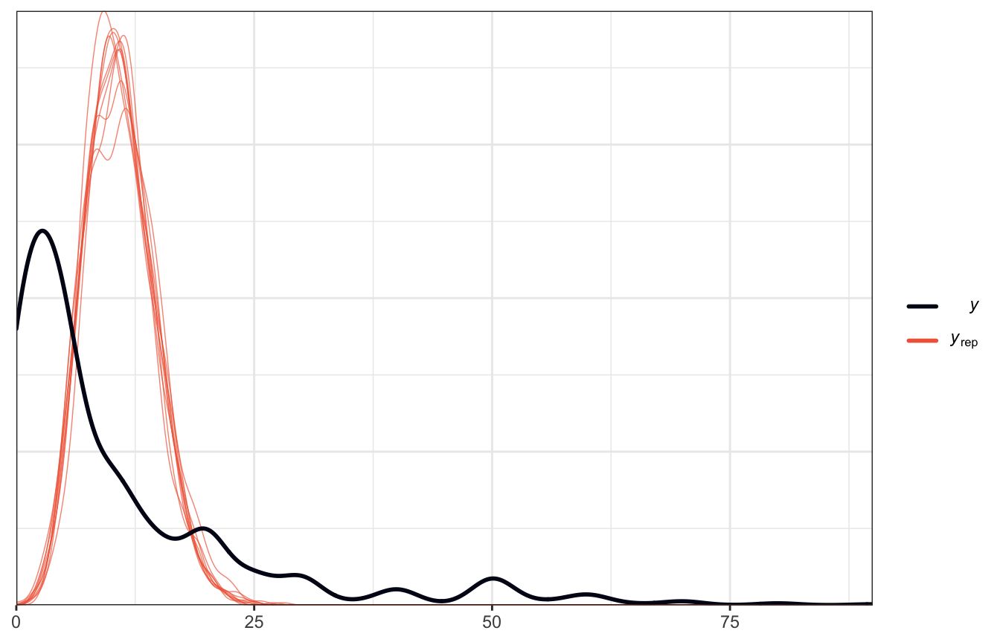
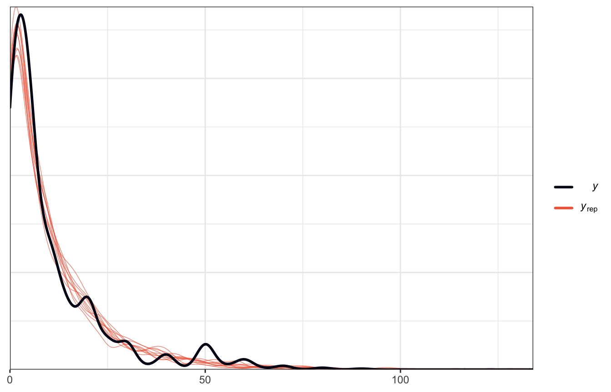

library(bayesrules)
library(tidyverse)
library(brms)
library(cmdstanr)
library(rstanarm)
library(marginaleffects)
library(broom)
library(broom.mixed)
library(tidybayes)
library(ggdist)
library(patchwork)
library(ggh4x) # For coord_axes_inside() and nested facets
library(geomtextpath)
library(ggrepel)
library(extraDistr)
# Plot stuff
clrs <- MetBrewer::met.brewer("Lakota", 6)
theme_set(theme_bw())
# Tell bayesplot to use the Lakota palette for things like pp_check()
# bayesplot::color_scheme_set(clrs)
# Tell bayesplot to use the viridis rocket palette for things like pp_check()
viridisLite::viridis(6, option = "rocket", end = 0.85, direction = -1) |>
# Take off the trailing "FF" in the hex codes
map_chr(~str_sub(., 1, 7)) |>
bayesplot::color_scheme_set()
# Seed stuff
set.seed(1234)
BAYES_SEED <- 1234
data(equality_index, package = "bayesrules")
equality <- equality_index |>
# Omit California because it has so many laws already
filter(state != "california")Reading notes
Poisson & negative binomial regression
The general setup
We want to model the number of LGBTQ+ anti-discrimination laws in states based on how urban a state is and its historical partisan voting patterns. Here’s the general relationship. A regular straight OLS line doesn’t fit the data well, but because the outcome is a count, and because the general relationship is curvy, Poisson regression will work.
ggplot(equality, aes(x = percent_urban, y = laws)) +
geom_point(aes(fill = historical), pch = 21, size = 4, color = "white") +
geom_smooth(aes(color = "Poisson regression"), se = FALSE, method = "glm",
method.args = list(family = "poisson")) +
geom_smooth(aes(color = "Normal regression"), se = FALSE, method = "lm") +
scale_fill_manual(values = c(clrs[6], clrs[3], clrs[2])) +
scale_color_manual(values = c(clrs[5], clrs[4])) +
labs(x = "Percent urban", y = "Count of laws", color = NULL, fill = "Party") +
theme(legend.position = "bottom")12.1: Building the Poisson regression model
Prelude: Intuition behind GLM links
In Poisson models, the \(\lambda\) rate must be positive. But if you model \(\lambda\) with a regression model like
\[ \lambda_i = \beta_0 + \beta_1 X_{i1} + \beta_2 X_{i2} + \dots, \]
the predicted values for \(\lambda\) could be negative. So instead we can force \(\lambda\) to be positive by using a log link function, or
\[ \log(\lambda_i) = \beta_0 + \beta_1 X_{i1} + \beta_2 X_{i2} + \dots \]
p1 <- augment(lm(laws ~ percent_urban + historical, data = equality),
newdata = expand_grid(percent_urban = seq(0, 100, 1),
historical = c("dem", "gop", "swing"))) |>
ggplot(aes(x = percent_urban, y = .fitted, color = historical)) +
geom_textline(aes(label = historical), linewidth = 1, hjust = 0.7) +
scale_color_manual(values = c(clrs[6], clrs[3], clrs[2]), guide = "none") +
labs(x = "Percent urban", y = "Predicted count of laws",
title = "Linear model of laws", subtitle = "Model predicts negative laws") +
theme_minimal() +
theme(axis.line = element_line(),
legend.position = "bottom") +
coord_axes_inside()
p2 <- augment(glm(laws ~ percent_urban + historical, data = equality,
family = poisson(link = "log")),
newdata = expand_grid(percent_urban = seq(0, 100, 1),
historical = c("dem", "gop", "swing")),
type.predict = "link") |>
ggplot(aes(x = percent_urban, y = .fitted, color = historical)) +
geom_textline(aes(label = historical), linewidth = 1, hjust = 0.7) +
scale_color_manual(values = c(clrs[6], clrs[3], clrs[2]), guide = "none") +
labs(x = "Percent urban", y = "Predicted count of laws (log scale)",
title = "Poisson model of laws, log scale",
subtitle = "Log link forces λ to be > 0") +
theme_minimal() +
theme(axis.line = element_line(),
legend.position = "bottom") +
coord_axes_inside(ylim = c(0, 4))
p3 <- augment(glm(laws ~ percent_urban + historical, data = equality,
family = poisson(link = "log")),
newdata = expand_grid(percent_urban = seq(0, 100, 1),
historical = c("dem", "gop", "swing")),
type.predict = "response") |>
ggplot(aes(x = percent_urban, y = .fitted, color = historical)) +
geom_textline(aes(label = historical), linewidth = 1, hjust = 0.7) +
scale_color_manual(values = c(clrs[6], clrs[3], clrs[2]), guide = "none") +
labs(x = "Percent urban", y = "Predicted count of laws",
title = "Poisson model of laws, response scale",
subtitle = "Backtransformed link keeps predictions above 0") +
theme_minimal() +
theme(axis.line = element_line(),
legend.position = "bottom") +
coord_axes_inside(ylim = c(0, 30))
p1 | p2 | p3Prelude II: How to interpret Poisson coefficients
Before specifying priors, it’s helpful to know what these actual coefficients mean. Here’s a basic frequentist model, with coefficients logged and exponentiated:
model_basic <- glm(laws ~ percent_urban + historical, data = equality,
family = poisson(link = "log"))
tidy(model_basic)
## # A tibble: 4 × 5
## term estimate std.error statistic p.value
## <chr> <dbl> <dbl> <dbl> <dbl>
## 1 (Intercept) 1.72 0.305 5.65 1.62e- 8
## 2 percent_urban 0.0163 0.00357 4.56 5.15e- 6
## 3 historicalgop -1.51 0.135 -11.2 4.39e-29
## 4 historicalswing -0.609 0.105 -5.78 7.52e- 9
tidy(model_basic, exponentiate = TRUE)
## # A tibble: 4 × 5
## term estimate std.error statistic p.value
## <chr> <dbl> <dbl> <dbl> <dbl>
## 1 (Intercept) 5.60 0.305 5.65 1.62e- 8
## 2 percent_urban 1.02 0.00357 4.56 5.15e- 6
## 3 historicalgop 0.220 0.135 -11.2 4.39e-29
## 4 historicalswing 0.544 0.105 -5.78 7.52e- 9For the intercept \(\beta_0\), this is the intercept on the logged scale when percent urban is 0 in historically Democratic states (since it’s the omitted base case). We can backtransform this to the response/count scale by exponentiating it: \(e^{1.7225} = 5.599\). That means that in a historically Democratic non-urban state, we’d expect to see 5.6 anti-discrimination laws.
But the most un-urban Democratic states are Maine and Vermont, each at 38% urban, so the intercept isn’t super important here.
For the percent urban \(\beta_1\) coefficient, this is the slope of the line on the log scale. We can expect the logged number of laws in states to increase by 0.0163 for every additional percentage point of urban-ness. To make that more interpretable we can exponentiate it (\(e^{0.0163} = 1.0164\)), which means that a 1 percentage point increase in urban-ness is associated with 1.0164 times more anti-discrimination laws (or 1.64%)
For the party/
historical\(\beta_2\) and \(\beta_3\) coefficients, these are the shifts in the logged Democratic intercept (again because it’s the omitted base case). We’d thus expect the logged number of laws in GOP states to be 1.5 lower on average. That makes no sense when logged, but if we exponentiate it (\(e^{-1.5145} = 0.2199\)), we find that GOP states should have 22% as many anti-discrimination laws as a Democratic state (or only 22% of what a typical Democratic state would have).
Or even better, we can look at the average marginal effects for these coefficients and get an overall average slope and change in intercept across the whole range of the fitted line. Here, the average slope is 0.17 laws (not logged laws) as urban-ness increases; the average GOP difference is 14.7 laws (that’s huge!).
mfx_basic <- marginaleffects(model_basic)
tidy(mfx_basic)
## type term contrast estimate std.error statistic
## 1 response percent_urban dY/dX 0.1718771 0.03894868 4.412913
## 2 response historical gop - dem -14.7199505 1.33083188 -11.060714
## 3 response historical swing - dem -8.6083989 1.47239777 -5.846517
## p.value conf.low conf.high
## 1 1.019892e-05 0.09553912 0.2482152
## 2 1.945431e-28 -17.32833305 -12.1115680
## 3 5.019718e-09 -11.49424546 -5.7225522…or we can look at the average marginal effects at user-specified or representative values, like in prototypical urban and rural Democratic and Republican states:
mfx_basic_typical <- model_basic |>
marginaleffects(newdata = datagrid(percent_urban = c(40, 90),
historical = c("dem", "gop")),
variables = "percent_urban",
by = c("percent_urban", "historical"))
tidy(mfx_basic_typical)
## type term contrast percent_urban historical estimate
## 1 response percent_urban mean(dY/dX) 40 dem 0.17440682
## 2 response percent_urban mean(dY/dX) 40 gop 0.03835624
## 3 response percent_urban mean(dY/dX) 90 dem 0.39318726
## 4 response percent_urban mean(dY/dX) 90 gop 0.08647131
## std.error statistic p.value conf.low conf.high
## 1 0.015033937 11.600875 4.078865e-31 0.14494084 0.20387279
## 2 0.006152249 6.234507 4.532025e-10 0.02629806 0.05041443
## 3 0.098768546 3.980896 6.865611e-05 0.19960447 0.58677006
## 4 0.027393506 3.156635 1.596007e-03 0.03278103 0.14016159This is neat! For Democratic states the backtransformed slope/effect is fairly large: a one percentage point increase (or rather, an infinitely small increase, since we’re working with instantaneous partial derivatives here), is associated with 0.17 more anti-discrimination laws in rural states and 0.39 in urban states. In Republican states, the effect is small, with 0.04 and 0.09 more laws in rural and urban states.
Prelude III: Poisson assumptions
Poisson models have a few important assumptions:
- Structure of the data: Conditioned on predictors \(X\), the observed data \(Y_i\) for each case \(i\) is independent of other cases like case \(j\)
- Structure of \(Y\): The outcome is a discrete count of events
- Structure of the relationship: The logged average \(Y\) value can be written as a linear combination of the predictors: \(\log(\lambda_i) = \beta_0 + \beta_1 X_{i1} + \dots\)
- Structure of the variability in \(Y\): The mean and variance in Poisson distributions is the same, so there should be more spread around the fitted line for higher values of \(Y\)
The first three are all straightforward and standard for GLM-type models: \(Y\) needs to be independent, \(Y\) needs to be a count, and \(\log(Y)\) has to be modelable with a linear model.
The fourth is unique to Poisson models, though. In the Poisson distribution, the mean and the variance are the same thing, both when looking at \(Y\) by itself and when conditioning it on other things:
\[ \begin{aligned} E(Y) &= \operatorname{Var}(Y) = \lambda \text{, and} \\ E(Y \mid X) &= \operatorname{Var}(Y \mid X) = \lambda \end{aligned} \]
We can check that with the count of laws, both overall:
\[ E(\text{Laws}) = \operatorname{Var}(\text{Laws}) \]
equality |>
summarise(mean = mean(laws),
variance = sd(laws))
## # A tibble: 1 × 2
## mean variance
## <dbl> <dbl>
## 1 10.6 10.3And across different levels of urban-ness:
\[ E(\text{Laws} \mid \text{Percent urban}) = \operatorname{Var}(\text{Laws}\mid \text{Percent urban}) \]
equality_across_urban <- equality |>
mutate(urban_bins = santoku::chop_quantiles(percent_urban,
c(0.25, 0.5, 0.75))) |>
group_by(urban_bins) |>
summarise(mean = mean(laws),
variance = sd(laws)) |>
mutate(percent_urban = quantile(equality$percent_urban, c(0, 0.25, 0.5, 0.75) + 0.125),
.after = urban_bins)
equality_across_urban
## # A tibble: 4 × 4
## urban_bins percent_urban mean variance
## <fct> <dbl> <dbl> <dbl>
## 1 [0%, 25%) 56.7 6.17 6.22
## 2 [25%, 50%) 70.2 3.5 3.03
## 3 [50%, 75%] 77.9 12 9.37
## 4 (75%, 100%] 90.6 20.5 11.5That’s magical. In general, the assumptions hold pretty well. It gets a little off (underdispersed) for higher values of percent urban, but overall, the mean and variance are the same!
equality |>
ggplot(aes(x = percent_urban, y = laws)) +
geom_point(size = 1, color = "grey60") +
geom_smooth(se = FALSE, method = "glm", method.args = list(family = "poisson"),
size = 0.5, color = "grey40") +
geom_pointrange(data = equality_across_urban,
aes(y = mean, ymin = mean - variance, ymax = mean + variance),
color = clrs[4])Defining the priors
Okay cool. Now that we’ve checked the Poisson assumptions and these coefficients make sense, we can set good logical priors for the different parameters in our Poisson model.
For our priors, we’ll say that we think that number of anti-discrimination laws in a typical state is 7. The log of that is 2ish (\(\log(7) \approx 1.95\)). We’ll also say that this logged intercept could range ±1 around that mean, so 1–3. In the unlogged world, that means a typical state would have between 3 and 20 laws (\(e^1 \approx 3; e^3 \approx 20\)). Our prior for \(\beta_0\) is thus normal(2, 0.5).
In the book they specify a vague normal(0, 2.5) prior for all the other coefficients and rely on rstanarm’s autoscaling to make them reflect the data better. Here for fun I’ll use brms to be more specific about the priors.
For urban-ness (\(\beta_1\)), I think that there’s definitely a positive relationship, but it’s not going to be massive. A 10% increase in urban-ness in a typical state will probably add a couple more laws. The percent change from going from 7 (our prior intercept) to 9 is 0.3 (\(\frac{9 - 7}{7} = 0.286\)). Scaling that down to the result of a 1% increase gives us a change of 0.0286, or if we think about it multiplicatively it would be 1.0286. The logged version of 1.0286 is 0.0282, so we’re looking for coefficients around that.
(pct_change_10 <- (9 - 7) / 7)
## [1] 0.2857143
(pct_change_1 <- pct_change_10 * 0.1)
## [1] 0.02857143
log(1 + pct_change_1)
## [1] 0.02817088To get a sense for the range around that mean, let’s pretend a typical state goes from 7 to 40 laws as it becomes a little bit more urban. That’s a huge (and probably unlikely) jump! What does that look like in logged coefficients?
(pct_change_10 <- (40 - 7) / 7)
## [1] 4.714286
(pct_change_1 <- pct_change_10 * 0.1)
## [1] 0.4714286
log(1 + pct_change_1)
## [1] 0.3862337An effect that big would have a coefficient of 0.386. So in general, the range of plausible coefficients doesn’t ever get too high. Like, a coefficient of 2 would imply that there would be 7.4 times the number of anti-discrimination laws (or an increase of 740%!) with just a 1 percentage point increase in urban-ness. That’s wild.
exp(2)
## [1] 7.389056So we’ll set the prior average at 0, with a small range around it so that it goes from -2 to 2. For kicks and giggles, we’ll use a t-distribution instead of a normal distribution since the t-distribution has fatter tails and makes large coefficients more possible (maybe some states do see huge jumps? idk). You can see the fatter tails here with the blue t-distribution. Our official prior for \(\beta_1\) is thus student_t(2, 0, 1).
# R's built-in dt() function for t-distributions doesn't use mu and sigma, but
# extraDistr::dlst() does. We'll set df arbitrarily to 2 here since that's what
# McElreath did in his 7th video on robust regression :shrug:
ggplot() +
geom_function(fun = ~dlst(., df = 2, mu = 0, sigma = 1),
size = 1.5, color = clrs[1]) +
geom_function(fun = ~dnorm(., 0, 1), color = clrs[2], size = 0.5) +
xlim(c(-4, 4))For the party-specific changes in intercept (\(\beta_2\) and \(\beta_3\)), we can conceptualize this as the number of GOP state laws as a percentage of Democratic laws. For example, we’ve already said that the typical zero-urban Democratic state has around 7 laws. Based on background knowledge of how GOP states have dealt with LGBTQ+ issues, I’m guessing that there’s a big difference in those states. What if a GOP state has just one expected law? That would be 14% (\(\frac{1}{7} \approx 0.143\)) of a typical Democratic state. With 6 laws, it would have 86% as many laws (\(\frac{6}{7} \approx 0.857\)), and so on. We’ll assume that GOP states on average will generally have fewer laws on average than Democratic states (meaning the ratio would be less than 1; if a GOP state had 8 laws compared to 7 in a Democratic state, the ratio would be 1.142). Let’s say that on average GOP states will have 60% of the laws a Democratic state would—that would imply that compared to a Democratic state with 7 laws, a GOP state would have 4 (\(7 \times 0.6 = 4.2\)). The ratio could be as low as 10%, and it could maybe be positive sometimes, like 110% or 150%, but it can never be below 0. Something like this half-t-distribution:
tibble(x = seq(0.1, 5, by = 0.01)) |>
mutate(y = dlst(x, df = 2, mu = 0.6, sigma = 2)) |>
ggplot(aes(x = x, y = y)) +
geom_line(size = 1, color = clrs[3]) +
geom_vline(xintercept = 1, color = "grey50", linetype = 21) +
annotate(geom = "label", x = 0.4, y = 0.05,
label = "Fewer laws relative\nto Democratic states", size = 3) +
annotate(geom = "label", x = 1.6, y = 0.05,
label = "More laws relative\nto Democratic states", size = 3) +
scale_x_continuous(labels = scales::percent_format(),
breaks = seq(0, 5, 0.5)) +
labs(x = "% of laws in identical Democratic state")That’s cool, but we can’t use that distribution in Stan because we’re actually modelling the logged ratio. To get an idea of the general shape of the logged distribution we can log the t-distribution:
tibble(x = seq(0.1, 6, by = 0.01)) |>
mutate(y = dlst(x, df = 2, mu = 0.6, sigma = 2)) |>
mutate(x = log(x)) |>
ggplot(aes(x = x, y = y)) +
geom_line(size = 1, color = clrs[3]) +
geom_vline(xintercept = 0, color = "grey50", linetype = 21) +
annotate(geom = "label", x = -0.5, y = 0.05,
label = "Fewer laws relative\nto Democratic states", size = 3) +
annotate(geom = "label", x = 0.5, y = 0.05,
label = "More laws relative\nto Democratic states", size = 3)It’s doing some weird things on the left side of the plot because of how logs work with zero. The closer we get to 0, the bigger the logged value becomes:
log(0.1)
## [1] -2.302585
log(0.01)
## [1] -4.60517
log(0.00001)
## [1] -11.51293
log(1e-10)
## [1] -23.02585It’s super unlikely that we’ll ever see a GOP state with 0.00000001% of the laws of a Democratic state, so a value like -23 on the logged scale is super implausible. A GOP state with just 1% of the laws of a Democratic state would have a logged value of -4.6051702; any lower than that is extreme.
So our average of 0.6 is -0.511 on the log scale. We’ll use a t-distribution again (for fat tails), and use a sigma of 2 which creates this kind of distribution with most values below 0 (so the unlogged ratio is less than 100%):
tibble(x = seq(-3, 2, by = 0.01)) |>
mutate(y = dlst(x, df = 2, mu = log(0.6), sigma = 2)) |>
ggplot(aes(x = x, y = y)) +
geom_line(size = 1, color = clrs[3]) +
geom_vline(xintercept = 0, color = "grey50", linetype = 21) +
annotate(geom = "label", x = -0.7, y = 0.09,
label = "Fewer laws relative\nto Democratic states", size = 3) +
annotate(geom = "label", x = 0.7, y = 0.09,
label = "More laws relative\nto Democratic states", size = 3)This still doesn’t make a ton of sense with logged values, so we can exponentiate it just to see what it looks like on the original scale of ratios:
tibble(x = seq(-3, 1, by = 0.01)) |>
mutate(y = dlst(x, df = 2, mu = log(0.6), sigma = 2)) |>
mutate(x = exp(x)) |>
ggplot(aes(x = x, y = y)) +
geom_line(size = 1, color = clrs[3]) +
geom_vline(xintercept = 1, color = "grey50", linetype = 21) +
annotate(geom = "label", x = 0.7, y = 0.09,
label = "Fewer laws relative\nto Democratic states", size = 3) +
annotate(geom = "label", x = 1.3, y = 0.09,
label = "More laws relative\nto Democratic states", size = 3) +
scale_x_continuous(labels = scales::percent_format(),
breaks = seq(0, 5, 0.5)) +
labs(x = "% of laws in identical Democratic state")That’s not identical to the half-t-distribution we made up earlier, and it makes tiny ratios like 1% very unlikely, but the bulk of the distribution is still around 60% as expected, so we’ll go with it. Our final prior for \(\beta_2\) on the log scale is thus student_t(2, -0.5, 2).
Historical swing states behave a little differently. Some of them might have more laws than a typical Democratic state (like 8/7, or 1.14 or 114%); some might have fewer (like 6/7, or 0.86, or 86%). In this case we don’t know much about the direction of the distance, so we’ll say that the average ratio is 100% ± some amount:
tibble(x = seq(-2, 1.5, by = 0.01)) |>
mutate(y = dlst(x, df = 2, mu = 0, sigma = 2)) |>
mutate(x = exp(x)) |>
ggplot(aes(x = x, y = y)) +
geom_line(size = 1, color = clrs[2]) +
geom_vline(xintercept = 1, color = "grey50", linetype = 21) +
annotate(geom = "label", x = 0.6, y = 0.11,
label = "Fewer laws\nrelative to\nDemocratic\nstates", size = 3) +
annotate(geom = "label", x = 1.4, y = 0.11,
label = "More laws\nrelative to\nDemocratic\nstates", size = 3) +
scale_x_continuous(labels = scales::percent_format(),
breaks = seq(0, 5, 0.5)) +
labs(x = "% of laws in identical Democratic state")On a logged scale this nice and symmetrical around 0:
tibble(x = seq(-2, 2, by = 0.01)) |>
mutate(y = dlst(x, df = 2, mu = 0, sigma = 2)) |>
ggplot(aes(x = x, y = y)) +
geom_line(size = 1, color = clrs[2]) +
geom_vline(xintercept = 0, color = "grey50", linetype = 21) +
annotate(geom = "label", x = -0.6, y = 0.11,
label = "Fewer laws relative\nto Democratic states", size = 3) +
annotate(geom = "label", x = 0.6, y = 0.11,
label = "More laws relative\nto Democratic states", size = 3)A student_t(2, 0, 2) distribution looks reasonable and vague enough, so our final prior for \(\beta_3\) is student_t(2, 0, 2).
Finally, the formal model
PHEW OKAY so with all of that, here’s our official model and priors:
\[ \begin{aligned} \text{Laws}_i &\sim \operatorname{Poisson}(\lambda_i) \\ \log(\lambda_i) &= \beta_0 + \beta_1\ \text{Percent urban}_i + \beta_2\ \text{GOP}_i + \beta_3\ \text{Swing}_i \\ \\ \beta_0 &\sim \mathcal{N}(2, 0.5) \\ \beta_1 &\sim \operatorname{Student t}(\nu = 2, \mu = 0, \sigma = 1) \\ \beta_2 &\sim \operatorname{Student t}(\nu = 2, \mu = -0.5, \sigma = 2) \\ \beta_3 &\sim \operatorname{Student t}(\nu = 2, \mu = 0, \sigma = 2) \\ \end{aligned} \]
How reasonable are all these priors when they’re all working together? Let’s simulate it!
priors <- c(prior(normal(2, 0.5), class = Intercept),
prior(student_t(2, 0, 1), class = b, coef = "percent_urban"),
prior(student_t(2, -0.5, 2), class = b, coef = "historicalgop"),
prior(student_t(2, 0, 2), class = b, coef = "historicalswing"))
model_equality_prior_brms <- brm(
bf(laws ~ percent_urban + historical),
data = equality,
family = poisson(),
prior = priors,
sample_prior = "only",
chains = 4, iter = 4000, seed = BAYES_SEED,
backend = "cmdstanr", refresh = 0
)
## Start samplingIt’s all over the place with different slopes across different historical parties, which is good:
prior_draws_brms <- equality |>
group_by(historical) |>
summarize(min = min(percent_urban),
max = max(percent_urban)) |>
mutate(percent_urban = map2(min, max, ~seq(.x, .y, 1))) |>
unnest(percent_urban) |>
add_epred_draws(model_equality_prior_brms, ndraws = 100)
prior_draws_brms |>
ggplot(aes(x = percent_urban, y = .epred)) +
geom_line(aes(group = paste(historical, .draw), color = historical),
alpha = 0.5, size = 0.5) +
coord_cartesian(ylim = c(0, 100)) +
scale_color_manual(values = c(clrs[6], clrs[3], clrs[2])) +
labs(x = "Percent urban", y = "Predicted number of laws", color = "Party") +
theme(legend.position = "bottom")We can’t specify individual parameter priors with rstanarm (???), so we’ll just do what the book does and use normal(0, 2.5) with magical autoscaling:
equality_model_prior <- stan_glm(
laws ~ percent_urban + historical,
data = equality,
family = poisson,
prior_intercept = normal(2, 0.5),
prior = normal(0, 2.5, autoscale = TRUE),
chains = 4, iter = 4000, seed = 84735, refresh = 0,
prior_PD = TRUE
)What priors did rstanarm decide were good?
prior_summary(equality_model_prior)
## Priors for model 'equality_model_prior'
## ------
## Intercept (after predictors centered)
## ~ normal(location = 2, scale = 0.5)
##
## Coefficients
## Specified prior:
## ~ normal(location = [0,0,0], scale = [2.5,2.5,2.5])
## Adjusted prior:
## ~ normal(location = [0,0,0], scale = [0.17,4.97,5.60])
## ------
## See help('prior_summary.stanreg') for more detailsIt decided on \(\mathcal{N}(0, 0.17)\), \(\mathcal{N}(0, 4.97)\), and \(\mathcal{N}(0, 5.6)\), which is a lot wider than what I decided on above :shrug:.
Those wider priors give a larger range of possible values than the narrow models earlier:
prior_draws_rstanarm <- equality |>
group_by(historical) |>
summarize(min = min(percent_urban),
max = max(percent_urban)) |>
mutate(percent_urban = map2(min, max, ~seq(.x, .y, 1))) |>
unnest(percent_urban) |>
add_epred_draws(equality_model_prior, ndraws = 100)
prior_draws_rstanarm |>
ggplot(aes(x = percent_urban, y = .epred)) +
geom_line(aes(group = paste(historical, .draw), color = historical),
alpha = 0.5, size = 0.5) +
coord_cartesian(ylim = c(0, 100)) +
scale_color_manual(values = c(clrs[6], clrs[3], clrs[2])) +
labs(x = "Percent urban", y = "Predicted number of laws", color = "Party") +
theme(legend.position = "bottom")12.2: Simulating the posterior
With these informative-ish priors, we can finally fit the actual model and play with the posterior.
Run the model
FOR FUN AND EXCITEMENT AND LEARNING I wrote the model in Stan here, but I’m not going to work with its posterior samples or anything for the rest of the notebook. I just wanted to try writing a non-OLS model in Stan. It is definitely not optimized or efficient or anything, but it works and it’s neat.
priors <- c(prior(normal(2, 0.5), class = Intercept),
prior(student_t(2, 0, 1), class = b, coef = "percent_urban"),
prior(student_t(2, -0.5, 2), class = b, coef = "historicalgop"),
prior(student_t(2, 0, 2), class = b, coef = "historicalswing"))
model_equality_brms <- brm(
bf(laws ~ percent_urban + historical),
data = equality,
family = poisson(),
prior = priors,
chains = 4, iter = 4000, seed = BAYES_SEED,
backend = "cmdstanr", refresh = 0
)
## Start samplingequality_model <- stan_glm(
laws ~ percent_urban + historical,
data = equality,
family = poisson,
prior_intercept = normal(2, 0.5),
prior = normal(0, 2.5, autoscale = TRUE),
chains = 4, iter = 4000, seed = 84735, refresh = 0
)There are different ways to model GLMs in Stan. First we can use the more traditional mathy approach of calculating \(\lambda\) as a function of the intercept and all the slopes multiplied by all the Xs, then exponentiating the \(\lambda\), then feeding the unlogged \(\lambda\) to poisson() in Stan. This is precisely what the mathematical model says to do, but it involves manual matrix multiplication.
12-stan/equality-manual.stan
data {
int<lower=0> n; // Number of rows
int<lower=0> k; // Number of predictors
matrix[n,k] X; // Predictors
array[n] int Y; // Outcome variable
}
parameters {
real alpha;
vector[k] beta;
}
transformed parameters {
array[n] real log_lambda;
array[n] real<lower=0> lambda;
for (i in 1:n) {
// We can be super explicit about the whole equation, expanding it to
// beta1*x1 + beta2*x2 + ..., or alternatively, we can use dot_product() to
// multiply all the betas and Xs at once
log_lambda[i] = alpha + beta[1] * X[i,1] + beta[2] * X[i,2] + beta[3] * X[i,3];
// log_lambda[i] = alpha + dot_product(X[i], beta);
lambda[i] = exp(log_lambda[i]);
}
}
model {
alpha ~ normal(2, 0.5);
beta[1] ~ student_t(2, 0, 1);
beta[2] ~ student_t(2, -0.5, 2);
beta[3] ~ student_t(2, 0, 2);
Y ~ poisson(lambda);
}
generated quantities {
array[n] int Y_rep;
vector[n] log_lik;
for (i in 1:n) {
log_lik[i] = poisson_lpmf(Y[i] | lambda[i]);
Y_rep[i] = poisson_rng(lambda[i]);
}
}equality_stan_manual <- cmdstan_model("12-stan/equality-manual.stan")# Build a matrix of predictors for Stan
X <- model.matrix(~ 1 + percent_urban + historical, data = equality)[,-1]
equality_samples_manual <- equality_stan_manual$sample(
data = list(n = nrow(equality),
Y = equality$laws,
X = X,
k = ncol(X)),
parallel_chains = 4, iter_warmup = 5000, iter_sampling = 5000,
refresh = 0, seed = BAYES_SEED
)
## Running MCMC with 4 parallel chains...
##
## Chain 1 finished in 1.5 seconds.
## Chain 3 finished in 1.5 seconds.
## Chain 2 finished in 1.9 seconds.
## Chain 4 finished in 2.0 seconds.
##
## All 4 chains finished successfully.
## Mean chain execution time: 1.7 seconds.
## Total execution time: 2.1 seconds.I’m not going to work with these Stan models in the rest of the notebook here because it’s a hassle, but just to check that they worked, here are the coefficients, the LOO stats, and pp_check():
equality_samples_manual$print(
variables = c("alpha", "beta[1]", "beta[2]", "beta[3]"),
"mean", "median", "sd", ~quantile(.x, probs = c(0.025, 0.975))
)
## variable mean median sd 2.5% 97.5%
## alpha 1.78 1.78 0.26 1.27 2.28
## beta[1] 0.02 0.02 0.00 0.01 0.02
## beta[2] -1.53 -1.52 0.13 -1.79 -1.27
## beta[3] -0.61 -0.61 0.10 -0.82 -0.42
equality_samples_manual$loo()
##
## Computed from 20000 by 49 log-likelihood matrix
##
## Estimate SE
## elpd_loo -194.2 20.2
## p_loo 17.7 4.6
## looic 388.5 40.3
## ------
## Monte Carlo SE of elpd_loo is 0.1.
##
## Pareto k diagnostic values:
## Count Pct. Min. n_eff
## (-Inf, 0.5] (good) 47 95.9% 1013
## (0.5, 0.7] (ok) 2 4.1% 127
## (0.7, 1] (bad) 0 0.0% <NA>
## (1, Inf) (very bad) 0 0.0% <NA>
##
## All Pareto k estimates are ok (k < 0.7).
## See help('pareto-k-diagnostic') for details.
equality_samples_manual |>
spread_draws(Y_rep[i]) |>
slice_sample(n = 25) |>
mutate(id = 1:n()) |>
ggplot(aes(x = Y_rep)) +
geom_density(aes(group = id), color = "lightblue", size = 0.25) +
geom_density(data = equality, aes(x = laws), color = "darkblue", size = 1)Instead of manually doing the matrix multiplication, Stan has shortcut functions specifically for running. The poisson_log_glm() function, for instance, takes a matrix of predictors, the intercept, and the coefficients, and deals with all the math and multiplication automatically.
12-stan/equality.stan
data {
int<lower=0> n; // Number of rows
int<lower=0> k; // Number of predictors
matrix[n,k] X; // Predictors
array[n] int Y; // Outcome variable
}
parameters {
real alpha;
vector[k] beta;
}
model {
// Priors
alpha ~ normal(2, 0.5);
beta[1] ~ student_t(2, 0, 1);
beta[2] ~ student_t(2, -0.5, 2);
beta[3] ~ student_t(2, 0, 2);
// Model
Y ~ poisson_log_glm(X, alpha, beta);
}
generated quantities {
array[n] int Y_rep;
vector[n] log_lik;
vector[n] lambda_hat = alpha + X * beta;
for (i in 1:n) {
// We can use the shortcut poisson_log_glm_lpmf, which works just like
// poisson_log_glm from earlier
log_lik[i] = poisson_log_glm_lpmf({Y[i]} | X[i,], alpha, beta);
// Or we can use poisson_log_lpmf and feed it lambda_hat
// log_lik[i] = poisson_log_lpmf(Y[i] | lambda_hat[i]);
// Posterior predictive distribution
Y_rep[i] = poisson_log_rng(lambda_hat[i]);
}
}equality_stan <- cmdstan_model("12-stan/equality.stan")X <- model.matrix(~ 1 + percent_urban + historical, data = equality)[,-1]
equality_samples <- equality_stan$sample(
data = list(n = nrow(equality),
Y = equality$laws,
X = X,
k = ncol(X)),
parallel_chains = 4, iter_warmup = 5000, iter_sampling = 5000,
refresh = 0, seed = BAYES_SEED
)
## Running MCMC with 4 parallel chains...
##
## Chain 1 finished in 0.7 seconds.
## Chain 3 finished in 0.7 seconds.
## Chain 2 finished in 0.9 seconds.
## Chain 4 finished in 0.9 seconds.
##
## All 4 chains finished successfully.
## Mean chain execution time: 0.8 seconds.
## Total execution time: 1.0 seconds.equality_samples$print(
variables = c("alpha", "beta[1]", "beta[2]", "beta[3]"),
"mean", "median", "sd", ~quantile(.x, probs = c(0.025, 0.975))
)
## variable mean median sd 2.5% 97.5%
## alpha 1.78 1.79 0.26 1.28 2.27
## beta[1] 0.02 0.02 0.00 0.01 0.02
## beta[2] -1.52 -1.52 0.13 -1.79 -1.27
## beta[3] -0.61 -0.61 0.10 -0.82 -0.41
equality_samples$loo()
## Warning: Some Pareto k diagnostic values are too high. See help('pareto-k-diagnostic') for details.
##
## Computed from 20000 by 49 log-likelihood matrix
##
## Estimate SE
## elpd_loo -194.5 20.3
## p_loo 18.0 4.8
## looic 389.0 40.7
## ------
## Monte Carlo SE of elpd_loo is NA.
##
## Pareto k diagnostic values:
## Count Pct. Min. n_eff
## (-Inf, 0.5] (good) 48 98.0% 963
## (0.5, 0.7] (ok) 0 0.0% <NA>
## (0.7, 1] (bad) 1 2.0% 38
## (1, Inf) (very bad) 0 0.0% <NA>
## See help('pareto-k-diagnostic') for details.
equality_samples |>
spread_draws(Y_rep[i]) |>
slice_sample(n = 25) |>
mutate(id = 1:n()) |>
ggplot(aes(x = Y_rep)) +
geom_density(aes(group = id), color = "lightblue", size = 0.25) +
geom_density(data = equality, aes(x = laws), color = "darkblue", size = 1)Regular diagnostics
Before looking at the coefficients/parameters and predictions, let’s check the diagnostics:
Trace plots
FUZZY.
model_equality_brms |>
gather_draws(`^b_.*`, regex = TRUE) |>
ggplot(aes(x = .iteration, y = .value, color = factor(.chain))) +
geom_line(size = 0.1) +
scale_color_viridis_d(option = "rocket", end = 0.85) +
facet_wrap(vars(.variable), scales = "free_y")Trank plots
Nice and random
model_equality_brms |>
gather_draws(`^b_.*`, regex = TRUE) |>
group_by(.variable) |>
mutate(draw_rank = rank(.value)) |>
ggplot(aes(x = draw_rank, color = factor(.chain))) +
stat_bin(geom = "step", binwidth = 250, position = position_identity(), boundary = 0) +
scale_color_viridis_d(option = "rocket", end = 0.85) +
facet_wrap(vars(.variable), scales = "free_y") +
theme(axis.text.y = element_blank(), axis.title.y = element_blank(), axis.ticks.y = element_blank())Posterior predicive plots
It seems to be overpredicting values < 10, but it does follow the general shape of the data, so that’s reassuring.
pp_check(model_equality_brms, ndraws = 50)LOO, PSIS, and WAIC
We don’t have too many issues with influential points with overly high Pareto k values, and loo() is generally happy:
loo(model_equality_brms)
##
## Computed from 8000 by 49 log-likelihood matrix
##
## Estimate SE
## elpd_loo -195.7 20.1
## p_loo 19.7 5.1
## looic 391.4 40.3
## ------
## Monte Carlo SE of elpd_loo is 0.2.
##
## Pareto k diagnostic values:
## Count Pct. Min. n_eff
## (-Inf, 0.5] (good) 46 93.9% 978
## (0.5, 0.7] (ok) 3 6.1% 126
## (0.7, 1] (bad) 0 0.0% <NA>
## (1, Inf) (very bad) 0 0.0% <NA>
##
## All Pareto k estimates are ok (k < 0.7).
## See help('pareto-k-diagnostic') for details.For fun, we can recreate Figure 7.10 from Rethinking to see which points are causing some outlier weirdness:
model_equality_brms <- add_criterion(model_equality_brms,
criterion = c("loo", "waic"))
## Warning:
## 13 (26.5%) p_waic estimates greater than 0.4. We recommend trying loo instead.
brms_diagnostics <- tibble(
psis = model_equality_brms$criteria$loo$diagnostics$pareto_k,
p_waic = model_equality_brms$criteria$waic$pointwise[, "p_waic"],
state = pull(equality, state)) |>
mutate(highlight = psis > 0.5 | p_waic > 1)
brms_diagnostics |>
ggplot(aes(x = psis, y = p_waic)) +
geom_point(aes(color = highlight)) +
geom_text_repel(data = filter(brms_diagnostics, highlight),
aes(label = state), seed = 1234, direction = "y") +
geom_vline(xintercept = 0.5, linetype = 32) +
scale_color_manual(values = c("grey40", clrs[4]), guide = "none") +
labs(x = "PSIS Pareto k", y = "WAIC penalty")Trace plots
Still fuzzy here too:
equality_model |>
gather_draws(`(Intercept)`, percent_urban, historicalgop, historicalswing) |>
ggplot(aes(x = .iteration, y = .value, color = factor(.chain))) +
geom_line(size = 0.1) +
scale_color_viridis_d(option = "rocket", end = 0.85) +
facet_wrap(vars(.variable), scales = "free_y")Trank plots
Great
equality_model |>
gather_draws(`(Intercept)`, percent_urban, historicalgop, historicalswing) |>
group_by(.variable) |>
mutate(draw_rank = rank(.value)) |>
ggplot(aes(x = draw_rank, color = factor(.chain))) +
stat_bin(geom = "step", binwidth = 250, position = position_identity(), boundary = 0) +
scale_color_viridis_d(option = "rocket", end = 0.85) +
facet_wrap(vars(.variable), scales = "free_y") +
theme(axis.text.y = element_blank(), axis.title.y = element_blank(), axis.ticks.y = element_blank())Posterior predicive plots
Lovely
pp_check(equality_model, n = 50)LOO, PSIS, and WAIC
Interestingly, rstanarm finds that 3 observations have bad Pareto k scores!
rstanarm_loo <- loo(equality_model)
## Warning: Found 3 observation(s) with a pareto_k > 0.7. We recommend calling 'loo' again with argument 'k_threshold = 0.7' in order to calculate the ELPD without the assumption that these observations are negligible. This will refit the model 3 times to compute the ELPDs for the problematic observations directly.
rstanarm_loo
##
## Computed from 8000 by 49 log-likelihood matrix
##
## Estimate SE
## elpd_loo -196.1 20.2
## p_loo 20.2 5.3
## looic 392.2 40.3
## ------
## Monte Carlo SE of elpd_loo is NA.
##
## Pareto k diagnostic values:
## Count Pct. Min. n_eff
## (-Inf, 0.5] (good) 46 93.9% 851
## (0.5, 0.7] (ok) 0 0.0% <NA>
## (0.7, 1] (bad) 3 6.1% 32
## (1, Inf) (very bad) 0 0.0% <NA>
## See help('pareto-k-diagnostic') for details.For whatever reason, Maine and Vermont are super outliers now in the rstanarm model :shrug:
rstanarm_diagnostics <- tibble(
psis = rstanarm_loo$pointwise[, "influence_pareto_k"],
p_waic = waic(equality_model)$pointwise[, "p_waic"],
state = pull(equality, state)) |>
mutate(highlight = psis > 0.5 | p_waic > 1)
## Warning:
## 13 (26.5%) p_waic estimates greater than 0.4. We recommend trying loo instead.
rstanarm_diagnostics |>
ggplot(aes(x = psis, y = p_waic)) +
geom_point(aes(color = highlight)) +
geom_text_repel(data = filter(rstanarm_diagnostics, highlight),
aes(label = state), seed = 1234, direction = "y") +
geom_vline(xintercept = 0.5, linetype = 32) +
scale_color_manual(values = c("grey40", clrs[4]), guide = "none") +
labs(x = "PSIS Pareto k", y = "WAIC penalty")ELPD
For fun, we can compare the ELPD for the two models (more specific priors in brms; autoscaled priors in rstanarm) and see if one model performs better than the other. They’re basically identical.
tribble(
~model, ~stats,
"Default auto-scaled priors (rstanarm)", as_tibble(rstanarm_loo$estimates, rownames = "statistic"),
"Careful priors (brms)", as_tibble(model_equality_brms$criteria$loo$estimates, rownames = "statistic")
) |>
unnest(stats) |>
filter(statistic == "elpd_loo") |>
ggplot(aes(x = Estimate, y = model, color = model)) +
geom_pointrange(aes(xmin = Estimate - 2 * SE, xmax = Estimate + 2 * SE)) +
scale_y_discrete(labels = scales::label_wrap(15)) +
scale_color_manual(values = c(clrs[5], clrs[1]), guide = "none") +
labs(x = "ELPD", y = NULL)12.3: Interpreting the posterior
Coefficients / parameters
So what do these coefficients all actually mean? We can look at the fitted draws to see the predicted count of laws across a range of urban-ness and state political party
equality %>%
add_epred_draws(model_equality_brms, ndraws = 50) %>%
ggplot(aes(x = percent_urban, y = laws, color = historical)) +
geom_point(data = equality, size = 1) +
geom_line(aes(y = .epred, group = paste(historical, .draw)),
size = 0.5, alpha = 0.3) +
scale_color_manual(values = c(clrs[6], clrs[3], clrs[2])) +
labs(x = "Percent urban", y = "Count of laws", color = "Party") +
theme(legend.position = "bottom")equality %>%
add_epred_draws(equality_model, ndraws = 50) %>%
ggplot(aes(x = percent_urban, y = laws, color = historical)) +
geom_point(data = equality, size = 1) +
geom_line(aes(y = .epred, group = paste(historical, .draw)),
size = 0.5, alpha = 0.3) +
scale_color_manual(values = c(clrs[6], clrs[3], clrs[2])) +
labs(x = "Percent urban", y = "Count of laws", color = "Party") +
theme(legend.position = "bottom")
Like we thought with our priors, Democratic states have more laws on average than GOP or swing states, and swing states have more than GOP states. The Democratic-GOP gap is substantial. Based just on the plot of predictions ↑ there, there’s like a 15–20 law gap! Also, the count of laws is higher in urban states, also as expected.
We can look at the posterior distributions of the parameters/coefficients to get a more precise picture:
Log-scale coefficients:
# There's a weird bug in broom.mixed or brms or somewhere that makes brms
# Poisson models lose the term column here??? idk why??? tidy() works fine with
# the rstanarm model, and parameters::parameters(model_equality_brms) shows the
# terms fine. So here I just add them in manually with get_variables()
coefs_brms <- tidy(model_equality_brms) |>
select(-c(effect, component, group)) |>
mutate(term = get_variables(model_equality_brms)[1:4])
coefs_brms
## # A tibble: 4 × 5
## term estimate std.error conf.low conf.high
## <chr> <dbl> <dbl> <dbl> <dbl>
## 1 b_Intercept 1.70 0.303 1.09 2.28
## 2 b_percent_urban 0.0164 0.00355 0.00967 0.0235
## 3 b_historicalgop -1.51 0.135 -1.78 -1.25
## 4 b_historicalswing -0.609 0.104 -0.813 -0.405
model_equality_brms |>
gather_draws(`^b_.*`, regex = TRUE) |>
mutate(.variable = factor(.variable,
levels = c("b_Intercept", "b_percent_urban",
"b_historicalgop", "b_historicalswing"),
ordered = TRUE)) |>
ggplot(aes(x = .value, fill = .variable)) +
stat_halfeye(normalize = "xy") +
scale_fill_manual(values = c(clrs[5], clrs[4], clrs[3], clrs[2]), guide = "none") +
facet_wrap(vars(.variable), scales = "free_x")Unlogged coefficients:
coefs_brms |>
mutate(across(c(estimate, conf.low, conf.high), ~exp(.)))
## # A tibble: 4 × 5
## term estimate std.error conf.low conf.high
## <chr> <dbl> <dbl> <dbl> <dbl>
## 1 b_Intercept 5.49 0.303 2.96 9.78
## 2 b_percent_urban 1.02 0.00355 1.01 1.02
## 3 b_historicalgop 0.220 0.135 0.169 0.288
## 4 b_historicalswing 0.544 0.104 0.444 0.667
model_equality_brms |>
gather_draws(`^b_.*`, regex = TRUE) |>
mutate(.value = exp(.value)) |>
mutate(.variable = factor(.variable,
levels = c("b_Intercept", "b_percent_urban",
"b_historicalgop", "b_historicalswing"),
ordered = TRUE)) |>
ggplot(aes(x = .value, fill = .variable)) +
stat_halfeye(normalize = "xy") +
scale_fill_manual(values = c(clrs[5], clrs[4], clrs[3], clrs[2]), guide = "none") +
facet_wrap(vars(.variable), scales = "free_x")Log-scale coefficients:
coefs_rstanarm <- tidy(equality_model, conf.int = TRUE)
coefs_rstanarm
## # A tibble: 4 × 5
## term estimate std.error conf.low conf.high
## <chr> <dbl> <dbl> <dbl> <dbl>
## 1 (Intercept) 1.71 0.307 1.19 2.19
## 2 percent_urban 0.0165 0.00361 0.0108 0.0224
## 3 historicalgop -1.51 0.137 -1.74 -1.29
## 4 historicalswing -0.608 0.103 -0.783 -0.439
equality_model |>
gather_draws(`(Intercept)`, percent_urban, historicalgop, historicalswing) |>
mutate(.variable = factor(.variable,
levels = c("(Intercept)", "percent_urban",
"historicalgop", "historicalswing"),
ordered = TRUE)) |>
ggplot(aes(x = .value, fill = .variable)) +
stat_halfeye(normalize = "xy") +
scale_fill_manual(values = c(clrs[5], clrs[4], clrs[3], clrs[2]), guide = "none") +
facet_wrap(vars(.variable), scales = "free_x")Unlogged coefficients:
coefs_rstanarm |>
mutate(across(c(estimate, conf.low, conf.high), ~exp(.)))
## # A tibble: 4 × 5
## term estimate std.error conf.low conf.high
## <chr> <dbl> <dbl> <dbl> <dbl>
## 1 (Intercept) 5.50 0.307 3.28 8.95
## 2 percent_urban 1.02 0.00361 1.01 1.02
## 3 historicalgop 0.220 0.137 0.175 0.274
## 4 historicalswing 0.544 0.103 0.457 0.645
equality_model |>
gather_draws(`(Intercept)`, percent_urban, historicalgop, historicalswing) |>
mutate(.value = exp(.value)) |>
mutate(.variable = factor(.variable,
levels = c("(Intercept)", "percent_urban",
"historicalgop", "historicalswing"),
ordered = TRUE)) |>
ggplot(aes(x = .value, fill = .variable)) +
stat_halfeye(normalize = "xy") +
scale_fill_manual(values = c(clrs[5], clrs[4], clrs[3], clrs[2]), guide = "none") +
facet_wrap(vars(.variable), scales = "free_x")Interpretation
Interpretation time!
The intercept (\(\beta_0\)): On the logged scale, this is the intercept when percent urban is 0 in historically Democratic states. On its own it’s meaningless; exponentiating it gives us an expected count of laws in a completely rural Democratic state. The mean unlogged posterior value here is 5.5 laws, with a 95% credible interval ranging from 3 to 9.8.
The percent urban coefficient (\(\beta_1\)): This is the slope of the line on the logged scale. We should expect the logged number of laws in a state to increase by that amount for each additional percentage point of urban-ness. The mean posterior value is 0.0164, with a 95% credible interval ranging from 0.0097 to 0.0235. That seems really tiny. We can make it more interpretable by exponentiating it, where a 1 percentage point increase in urban-ness is associated with an average of 1.0166 times (or 1.66%) more laws, with a 95% credible interval ranging from 1.0097 to 1.0238 (0.97% to 2.38%).
We can make this a little more interpretable if we think in larger changes. In Bayes Rules! they say to imagine that the urban population in one state is 25 percentage points higher than another state. If that’s the case, we would expect \(e^{25 \times 0.0164} \approx 1.51\) or 51% more laws, or 1.5 times the number of laws. If that rural state had 10 laws, we’d expect 15 laws in the more urban state.
The historically GOP coefficient (\(\beta_2\)): This is the shift in the logged intercept for historically Republican states. The logged number of laws is lower by 1.5 on average, but that doesn’t make sense on its own. After exponentiation, we can think about ratios of GOP laws to Democratic laws. Here, that ratio has a posterior mean of 0.22 with a 95% credible interval of 0.169 to 0.288, meaning that Republican states have 22% (or 16.9%–28.8%) of the count of laws in similar Democratic states. That’s a sizable difference! Compared to a Democratic state with 20 laws, a Republican state is predicted to only have 3–5 laws (20 × 0.169, 20 × 0.288). Oof.
The historically swing state coefficient (\(\beta_3\)): This is the shift in the logged intercept for historically swing states. We interpret it the same way as the GOP shift. On the log scale it makes little sense; exponentiated, it has a posterior mean of 0.544 with a 95% credible interval of 0.444 to 0.667. That means that swing states have between 44.4%–66.67% of the laws of a Democratic state. Compared to a Democratic state with 20 laws, a swing state is predicted to have 9–13 laws (20 × 0.444, 20 × 0.667).
Marginal effects
Unlogging these coefficients makes interpretation a lot easier, but it would be nice to work with counts directly too. We already did that in each of those interpretation paragraphs, translating the percent-level effects to counts in hypothetical situations (rural state with 10 laws, Democratic state with 20 laws, etc.). We can be more systematic about these conversions to counts by calculating marginal effects.
Because this model is curvy, the slope of the fitted line changes depending on the value of percent urban. Additionally, the size of the party-specific intercept shift changes across different values of the count of laws. So instead, we can look at the overall average slope and change in intercept across the whole range of values. And because we’re working with posterior distributions, we actually get posterior distributions of marginal effects too!
If we look at overall marginal effect, we find that the posterior mean of the partial derivative for percent_urban on the count (or response) scale is 0.173, with a 95% credible interval of 0.1 to 0.25. That means that on an average, increasing urban-ness by one percentage point is associated with 0.1–0.25 additional laws, on average. The group contrasts are also helpful (and already on the count scale!). The average overall difference between Republican and Democratic states has a posterior mean of -14.64 laws, with a 95% credible interval of 12–17 laws, while the difference between swing states and Democratic states has a posterior mean of -8.5 laws (5.73–11.5).
mfx_brms <- marginaleffects(model_equality_brms, type = "response")
tidy(mfx_brms)
## type term contrast estimate conf.low conf.high
## 1 response percent_urban dY/dX 0.173300 0.10019 0.2504355
## 2 response historical gop - dem -14.635854 -17.31778 -12.0961604
## 3 response historical swing - dem -8.561223 -11.50006 -5.7257059That’s the marginal effect for the average of the whole range of urban-ness, but it’s maybe even more useful to look at the marginal effect at each possible level of percent urban.
This ends up being really neat! For the percent urban effect, it is small in rural states across all parties—down at 50% urban, a 1 percentage point increase in urban-ness is associated with 0.2 additional laws for Democratic states, 0.1ish for swing states, and nearly 0 for Republican states.
mfx_brms_typical <- model_equality_brms |>
marginaleffects(newdata = datagrid(percent_urban = seq(40, 90, by = 5),
historical = c("dem", "gop", "swing")),
variables = c("percent_urban", "historical")) |>
posteriordraws()
mfx_brms_typical |>
filter(term != "historical" | !(historical %in% c("gop", "swing"))) |>
mutate(historical = ifelse(term == "historical", "contrast", as.character(historical))) |>
mutate(term = fct_inorder(term)) |>
ggplot(aes(x = percent_urban, y = draw, color = historical, fill = historical)) +
stat_lineribbon(alpha = 0.25) +
scale_color_manual(values = c(clrs[6], clrs[3], clrs[2], clrs[1]),
breaks = c("dem", "gop", "swing"), na.value = clrs[1]) +
scale_fill_manual(values = c(clrs[6], clrs[3], clrs[2], clrs[1]),
breaks = c("dem", "gop", "swing"), na.value = clrs[1]) +
facet_nested_wrap(vars(term, contrast), scales = "free_y") +
labs(color = NULL, fill = NULL, x = "Percent urban",
y = "Marginal effect or ∆ in group means\nCount of laws") +
theme(legend.position = "bottom")
More automatic marginal effects plots
↑ that’s all fancy with nested facets and manual ggplot work; we can also make these same plots with the plot_cme() function in marginaleffects:
plot_cme(model_equality_brms,
effect = "percent_urban",
condition = c("percent_urban", "historical"))
plot_cme(model_equality_brms,
effect = "historical",
condition = "percent_urban")12.4: Posterior prediction
We can check how well this model predicts data by comparing the actual data of some state to the posterior predictive distribution for that state. In the book they use Minnesota, historically Democratic, fairly urban, with just 4 laws:
equality |> filter(state == "minnesota")
## # A tibble: 1 × 6
## state region gop_2016 laws historical percent_urban
## <fct> <fct> <dbl> <dbl> <fct> <dbl>
## 1 minnesota midwest 44.9 4 dem 73.3What does the model predict? We can use posterior_predict() to find that out. It will return actual integer counts (since posterior predictions are on the original scale of the data):
mn_pred_brms <- model_equality_brms |>
predicted_draws(newdata = filter(equality, state == "minnesota"))
mn_pred_brms |>
ggplot(aes(x = .prediction)) +
stat_histinterval(slab_fill = clrs[4], slab_color = "white", outline_bars = TRUE,
slab_size = 0.5) +
geom_vline(xintercept = 4)Just for fun, the book creates the posterior predictive distribution by hand by making the linear predictor \(\lambda\) for Minnesota, then using rpois() to simulate the number of laws based on that \(\lambda\). It’s the same!
model_equality_brms |>
spread_draws(`^b_.*`, regex = TRUE) |>
mutate(log_lambda = b_Intercept + b_percent_urban*73.3 +
b_historicalgop*0 + b_historicalswing*0,
lambda = exp(log_lambda),
y_new = rpois(n(), lambda = lambda)) |>
ggplot(aes(x = y_new)) +
stat_histinterval(slab_fill = clrs[4], slab_color = "white", outline_bars = TRUE,
slab_size = 0.5) +
geom_vline(xintercept = 4)mn_pred_rstanarm <- equality_model |>
predicted_draws(newdata = filter(equality, state == "minnesota"))
mn_pred_rstanarm |>
ggplot(aes(x = .prediction)) +
stat_histinterval(slab_fill = clrs[4], slab_color = "white", outline_bars = TRUE,
slab_size = 0.5) +
geom_vline(xintercept = 4)12.5: Model evaluation
1. How fair is the model?
It’s good.
2. How wrong is the model?
pp_check() earlier showed that it overpredict values < 10, but it does follow the general shape of the data:
pp_check(model_equality_brms, ndraws = 50)3. How accurate are the model’s predictions?
We checked that with LOO, ELPD, and PSIS stuff earlier. It’s all pretty good.
12.6: Negative binomial regression for overdispersed counts
This Poisson stuff is neat as long as the assumptions hold, in particular the requirement that the mean and variance of \(Y\) are the same. If that’s not the case, things break.
For instance, we can model the number of books people read per year based on whether they would like to be wise but unhappy, or happy but unwise.
data(pulse_of_the_nation, package = "bayesrules")
pulse <- pulse_of_the_nation |>
filter(books < 100)The number of books people read looks Poisson-y, but with a lot more super low values than we might expect from a regular Poisson distribution
pulse |>
ggplot(aes(x = books)) +
geom_histogram(binwidth = 5, boundary = 0, color = "white", size = 0.25)The mean and variance aren’t the same:
pulse |>
summarise(mean = mean(books),
variance = sd(books))
## # A tibble: 1 × 2
## mean variance
## <dbl> <dbl>
## 1 10.9 14.1And they’re not the same across a range of ages and wise/unwise responses:
pulse |>
mutate(age_bins = santoku::chop_quantiles(age,
c(0.25, 0.5, 0.75))) |>
group_by(age_bins, wise_unwise) |>
summarise(mean = mean(books),
variance = sd(books))
## # A tibble: 8 × 4
## # Groups: age_bins [4]
## age_bins wise_unwise mean variance
## <fct> <fct> <dbl> <dbl>
## 1 [0%, 25%) Happy but Unwise 9.10 12.0
## 2 [0%, 25%) Wise but Unhappy 14.8 15.2
## 3 [25%, 50%) Happy but Unwise 8.34 10.3
## 4 [25%, 50%) Wise but Unhappy 11.4 15.3
## 5 [50%, 75%] Happy but Unwise 9.09 13.5
## 6 [50%, 75%] Wise but Unhappy 12.3 15.1
## 7 (75%, 100%] Happy but Unwise 11.7 15.5
## 8 (75%, 100%] Wise but Unhappy 10.9 14.4This means that \(Y\) here is overdispersed, or that it has too much variability.
We can throw it at a Poisson model and it’ll fit just fine:
model_pulse_poisson <- brm(
bf(books ~ age + wise_unwise),
data = pulse,
family = poisson(),
chains = 4, iter = 4000, seed = BAYES_SEED,
backend = "cmdstanr", refresh = 0
)
## Start samplingBut if we look at a posterior predictive check, we have serious problems
# oh no
pp_check(model_pulse_poisson)
With negative binomial models, we get to estimate two parameters: \(\mu\), which is like Poisson’s \(\lambda\), and \(r\), which is a non-negative “reciprocal dispersion” thing:
\[ \begin{aligned} Y_u &\sim \operatorname{NegBin}(\mu_i, r) \\ \log(\mu_i) &= \beta_0 + \beta_1 X_{i1} + \beta_2 X_{i2} + \dots \\ \\ \beta_0, \beta_1, \beta_2, \beta_{\dots} &\sim \text{Some prior} \\ r &\sim \text{Some prior} > 0 \end{aligned} \]
model_pulse_negbinom <- brm(
bf(books ~ age + wise_unwise),
data = pulse,
family = negbinomial(),
chains = 4, iter = 4000, seed = BAYES_SEED,
backend = "cmdstanr", refresh = 0
)
## Start samplingThis fits almost perfectly now!
# oh no
pp_check(model_pulse_negbinom)
The coefficients are interpreted just like Poisson ones, since negative binomial uses a log link. Here are the different scales everything:
posterior_predict(), or \(Y\): Integers of counts of outcomeposterior_linpred(), or \(\log{\mu}\): Logged predicted outcomeposterior_epred()orposterior_linpred(transform = TRUE), or \(\mu\): Unlogged (exponentiated) predicted outcome
Here are the coefficients, both logged and unlogged:
coefs_negbinom <- tidy(model_pulse_negbinom) |>
select(-c(effect, component, group)) |>
mutate(term = get_variables(model_pulse_negbinom)[1:3])
coefs_negbinom |>
mutate(term = fct_inorder(term),
scale = "Logged", .before = 1) |>
bind_rows(
coefs_negbinom |>
mutate(across(c(estimate, conf.low, conf.high), ~exp(.)),
scale = "Unlogged")
) |>
arrange(term)
## # A tibble: 6 × 6
## scale term estimate std.error conf.low conf.high
## <chr> <chr> <dbl> <dbl> <dbl> <dbl>
## 1 Logged b_age 0.000326 0.00240 -0.00443 0.00500
## 2 Unlogged b_age 1.00 0.00240 0.996 1.01
## 3 Logged b_Intercept 2.24 0.134 1.98 2.50
## 4 Unlogged b_Intercept 9.36 0.134 7.24 12.2
## 5 Logged b_wise_unwiseWisebutUnhappy 0.266 0.0800 0.113 0.424
## 6 Unlogged b_wise_unwiseWisebutUnhappy 1.30 0.0800 1.12 1.53We’ll just plot the unlogged ones because thinking about logs is weird.
model_pulse_negbinom |>
gather_draws(`^b_.*`, regex = TRUE) |>
mutate(.value = exp(.value)) |>
mutate(.variable = factor(.variable,
levels = c("b_Intercept", "b_age",
"b_wise_unwiseWisebutUnhappy"),
ordered = TRUE)) |>
ggplot(aes(x = .value, fill = .variable)) +
stat_halfeye(normalize = "xy") +
scale_fill_manual(values = c(clrs[1], clrs[2], clrs[3]), guide = "none") +
facet_wrap(vars(.variable), scales = "free_x")General interpretation, just to get used to working with these coefficients:
- The unlogged intercept shows the expected count of books read when age is 0 and people want to be unwise but happy. The mean posterior value here is 9.3, with a 95% credible interval of 7.2–12.2.
- The unlogged coefficient for age shows the multiplicative change in the number of books read. A one-year increase in age is associated with a posterior average 0.03% increase in books read (or 1.0003 times), with a 95% credible interval of 0.9956–1.005. That’s hardly anything. There’s mostly likely not any sort of relationship here.
- The unlogged coefficient for wise but unhappy shows the percent or ratio of books read compared to the happy but unwise comparison group. The posterior mean is 1.3 with a 95% credible interval of 1.12–1.53, meaning that people who want to be wise but unhappy read 1.3 times (or 130%) as many books as their unwise happy counterparts. If a happy unwise person reads 10 books a year, a comparable unhappy wise person would be expected to read 13 books (or rather, somewhere between 11.2 and 15.3 books).
Here’s what all these moving parts look like simultaneously:
pulse %>%
add_epred_draws(model_pulse_negbinom, ndraws = 50) %>%
ggplot(aes(x = age, y = books, color = wise_unwise)) +
geom_point(data = pulse, size = 0.5, alpha = 0.8) +
geom_line(aes(y = .epred, group = paste(wise_unwise, .draw)),
size = 0.5, alpha = 0.3) +
scale_color_manual(values = c(clrs[4], clrs[3])) +
labs(x = "Age", y = "Count of books", color = NULL) +
theme(legend.position = "bottom")The slope is flat, so age doesn’t matter, but there is a recognizable gap in the happy/wise question—those who want to be wise read more books.
For fun, we can also look at the marginal effect of the happy/wise variable so we don’t have to work with percentages like 130%.
On average, the marginal effect of wanting to be wise over wanting to be happy is associated with almost 3 more books read per year (1.2–4.7 in the 95% credible interval):
mfx_neg_binom <- marginaleffects(model_pulse_negbinom, type = "response")
tidy(mfx_neg_binom)
## type term contrast estimate
## 1 response age dY/dX 0.003665476
## 2 response wise_unwise Wise but Unhappy - Happy but Unwise 2.884521215
## conf.low conf.high
## 1 -0.04831247 0.05471462
## 2 1.21990466 4.68279566mfx_neg_binom |>
posteriordraws() |>
filter(contrast != "dY/dX") |>
ggplot(aes(x = draw)) +
stat_halfeye(fill = clrs[3])We can also look at the gap across the full range of ages, though it’s not that exciting or interesting since the age slope is completeley flat. The 3-book boost happens at every possible age.
mfx_pulse_ages <- model_pulse_negbinom |>
marginaleffects(newdata = datagrid(age = seq(18, 99, by = 1),
wise_unwise = c("Wise but Unhappy")),
variables = c("wise_unwise")) |>
posteriordraws()
mfx_pulse_ages |>
ggplot(aes(x = age, y = draw, color = wise_unwise, fill = wise_unwise)) +
stat_lineribbon(alpha = 0.25) +
scale_color_manual(values = c(clrs[4], clrs[3])) +
scale_fill_manual(values = c(clrs[4], clrs[3])) +
labs(color = NULL, fill = NULL, x = "Age",
y = "∆ in group means") +
theme(legend.position = "bottom")